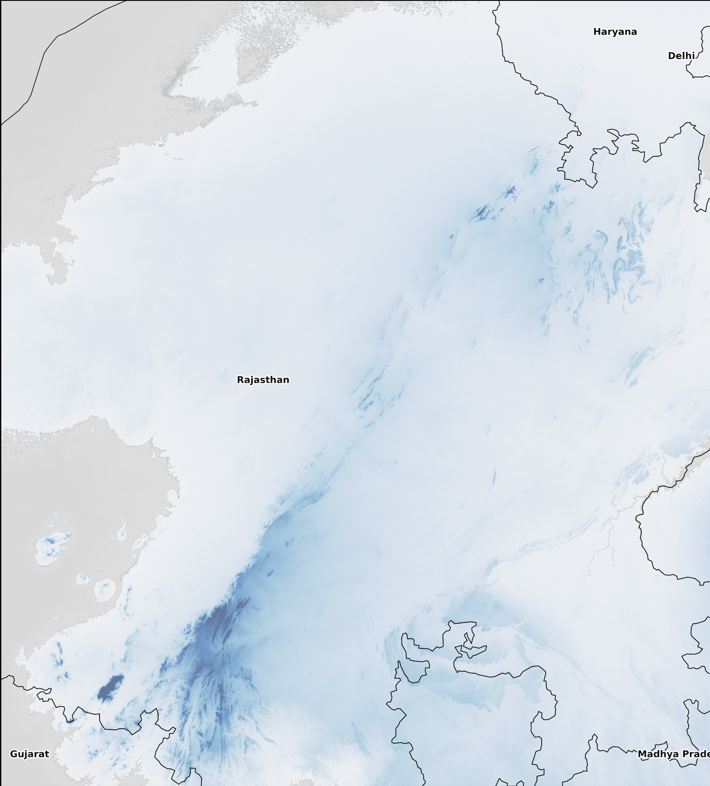
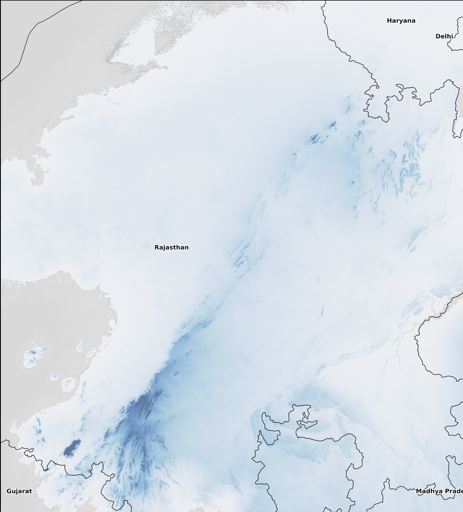

How a Supreme Court Definition Can Erase 96.5% of India's Oldest Mountains
An Analysis of the November 2025 Aravalli Ruling
Rushikesh Jadhav
December 24, 2025
On November 20, 2025, the Supreme Court of India accepted a narrow definition of the Aravalli Hills, declaring that only landforms rising at least 100 meters above local terrain would qualify as protected "Aravalli Hills," with clusters of such hills within 500 meters forming an "Aravalli Range."
1
The ruling, which replaced decades of broader ecological protections, has triggered nationwide alarm among environmentalists and scientists. My geospatial analysis of the world's oldest mountain range reveals a stark reality: the new legal definition reduces the protected Aravalli landscape by 257,785 square kilometers, a 96.5% loss of what was previously recognized as part of this ancient ecological system. Where 267,009 km² of elevated terrain once fell under the traditional understanding of the Aravalli range, only 9,224 km² now qualifies under the Supreme Court's prominence-and-clustering criteria.
The visualization above illustrates more than a technical redefinition; it represents what critics call an "administrative amputation" of one of the planet's most ancient geological formations. The nearly complete erasure of legal protection from low-lying ridges, eroded hillocks, and interconnected slopes fundamentally misunderstands how mountain ecosystems function. The Aravalli range, estimated at 3.2 billion years old, serves as a natural barrier preventing the Thar Desert from expanding eastward into the fertile Indo-Gangetic plains, while also functioning as a critical groundwater recharge zone
2
.
My analysis demonstrates that the Court's height-based threshold ignores the ecological reality that these "non-qualifying" areas form an inseparable continuum with the taller peaks. These are not separate terrain, but rather the supporting foundation, connecting corridors, and functional landscape that allows the entire system to prevent desertification, regulate climate, and sustain biodiversity across northwestern India.
Methodology: Mapping the Mountains with Geospatial Science
To quantify the impact of the Supreme Court's new definition, we conducted a comprehensive geospatial analysis using high-resolution satellite elevation data covering the Aravalli region across Rajasthan, Haryana, Gujarat, and Delhi. My approach combined advanced terrain analysis techniques with the specific legal criteria established in the November 2025 ruling to create a scientifically rigorous comparison between historical understandings of the range and its new legal boundaries.
My primary dataset came from OpenTopography's global COP30 Digital Elevation Model (DEM), a 30-meter resolution topographic map derived from satellite observations
3
.
This dataset covers the Aravalli study area spanning latitudes 24°N to 29°N and longitudes 72°E to 77°E—an analysis window of approximately 18,000 by 18,000 pixels providing precise elevation measurements for every 900 square meters of terrain. The COP30 represents a globally standardized elevation product ensuring consistent quality across the entire mountain range, eliminating regional variations that might skew results.
The Supreme Court's definition contains two distinct criteria that must both be satisfied: first, a prominence threshold requiring landforms to rise at least 100 meters above their surrounding terrain; second, a clustering requirement where such qualifying hills must be within 500 meters of other qualifying hills to form a protected "range." Implementing these rules required sophisticated spatial analysis techniques that go beyond simple elevation measurements.
For the prominence calculation
4
,
I employed a focal statistics approach that examines each pixel within the context of its neighborhood. For every 30-meter pixel in the dataset, we established a circular analysis window extending 2 kilometers in all directions, a scientifically appropriate scale for capturing meaningful topographic relationships in eroded, ancient mountain systems. Within each window, we calculated the minimum elevation using statistical filtering, then subtracted this local minimum from the pixel's actual elevation to determine its prominence value. This method, known in geomorphology as morphometric analysis, effectively identifies locations where terrain rises substantially above its immediate surroundings, precisely matching the legal definition's "elevation above local relief" criterion.
The clustering analysis proved more complex, requiring spatial connectivity algorithms to identify which prominent hills qualify as part of a continuous "range." We began with morphological dilation
5
,
a mathematical operation borrowed from image processing that expands each qualifying hill pixel by a 500-meter radius, creating potential connectivity zones. This was followed by connected component labeling, a graph theory technique that identifies spatially contiguous groups. Any cluster containing two or more original prominent hill pixels within these expanded zones qualified as part of the Aravalli range under the Court's definition. This two-step process statistically validates range continuity while maintaining computational efficiency across the massive dataset.
For comparison, we established a "traditional definition" baseline using areas above 200 meters elevation as a proxy for the historically recognized Aravalli landscape. While the original Forest Survey of India protections incorporated additional factors like slope gradients and valley widths
6
, exact historical boundary maps are not publicly available. The 200-meter threshold provides a reasonable approximation of the terrain traditionally understood and protected as the Aravalli system prior to the November 2025 redefinition.
My analysis workflow processed the data in three stages: first, calculating prominence values for all terrain; second, applying the clustering algorithm to identify qualifying ranges; third, quantifying areas under both old and new definitions to measure the change. Each stage produced verifiable intermediate results that could be independently validated. The final area calculations converted pixel counts to square kilometers using precise geospatial coordinate transformations, accounting for the Earth's curvature at these latitudes. The results are unambiguous: of the 267,009 km² of elevated Aravalli terrain under the traditional understanding, only 9,224 km² meets the new legal criteria—a reduction of 257,785 km² or 96.5% of the protected landscape.
This methodology represents a statistically defensible implementation of the legal definition while maintaining transparency at every step. The prominence calculations account for local terrain relationships rather than arbitrary absolute elevation cutoffs. The clustering analysis ensures we capture the Supreme Court's intent regarding spatial continuity. And the comparative framework quantifies exactly what has been lost in the transition from ecological understanding to administrative classification. The numbers tell a clear story: in redefining the Aravalli Hills through a narrow technical lens, the Court has legally erased nearly the entire ancient mountain system that has protected northwestern India from desertification for over three billion years.
 
